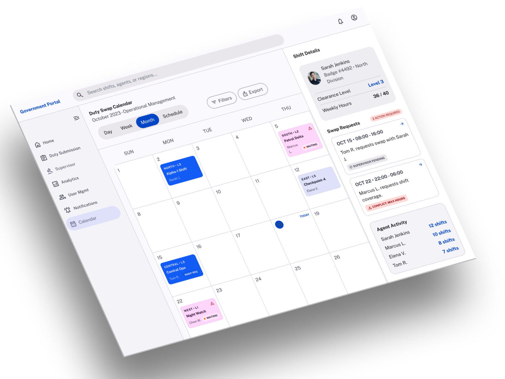
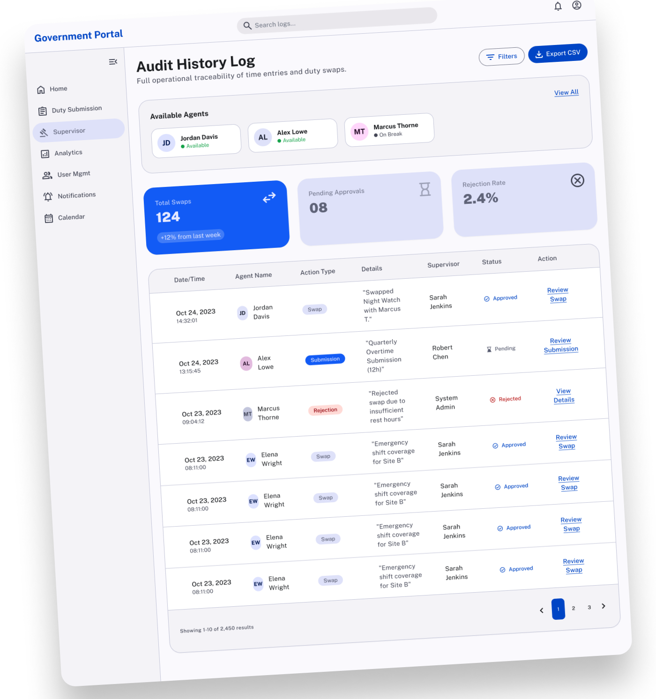
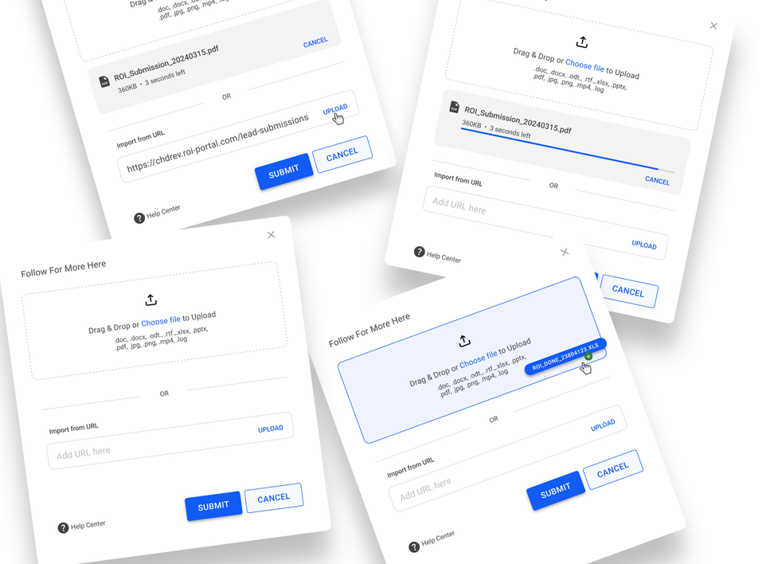
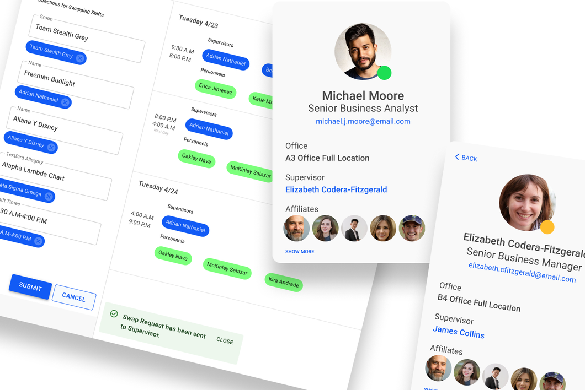
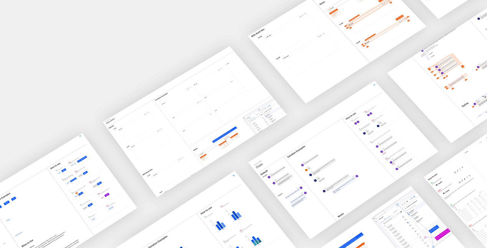

HSI Duty Swap Calendar

Due to the confidential nature of this project, the screens shown are recreated in Figma to represent the original designs while protecting sensitive information.
Overview
The HSI Duty Swap Calendar modernized how federal agents request, approve, and manage shift swaps. By replacing manual email chains and paper-based scheduling with a centralized digital workflow, the solution improved transparency, reduced administrative overhead, and gave supervisors better oversight of staffing coverage.
The Problem
Agents relied on emails, phone calls, and paper calendars to coordinate duty swaps, creating scheduling conflicts, limited visibility, and compliance risks. Research showed that 68% of agents experienced scheduling conflicts within a 90-day period, while supervisors spent over 5 hours each week managing requests manually.
Constraints
The solution needed to support existing federal compliance requirements, complex approval workflows, and legacy scheduling processes while remaining intuitive for agents and supervisors. Designs were continuously refined through close collaboration with developers, product managers, and business analysts to ensure technical feasibility and timely delivery.
Process
I followed the Double Diamond framework, starting with field observations, stakeholder interviews, surveys, and workflow analysis to understand scheduling challenges. Research informed personas, user journeys, wireframes, and iterative prototypes, which were refined through A/B testing, remote moderated testing, task scenario testing, and first-click testing with federal agents. Continuous feedback validated the ease of multitasking and scheduling, while design iterations led to a 45% reduction in submission errors before launch.
Solution
- Digital Duty Calendar — Centralized scheduling, shift swaps, and approvals into one collaborative calendar.
- Guided Swap Workflow — Simplified requesting, approving, and tracking schedule changes with clear status updates.
- Supervisor Oversight — Added filtering, scheduling views, and approval tools to improve staffing visibility and compliance.
- Reusable Components — Leveraged the product design system to deliver an accessible, consistent experience across desktop and mobile.


Impact
*Portfolio metrics represent usability testing and project outcomes used to communicate the impact of the design solution.
About RAVEN
RAVEN (Real-time Analytical Violence Enforcement Network) is an advanced tool used by Homeland Security Investigations (HSI) to help law enforcement agencies track, update, monitor, and increase operational awareness of criminal activities both locally and internationally.
The goal of RAVEN is to enhance national security through proactive intelligence gathering and coordinated enforcement. It enables HSI and partner agencies to stay ahead of criminal networks by making critical information:
- Timely
- Actionable
- Cross-functional
By improving data visibility and connecting field agents with decision-makers, RAVEN plays a pivotal role in modern law enforcement and counterterrorism operations.



RAVEN Design System
Role
Design System Iconographer/Contributor
Maintained the icon library and design system documentation to ensure consistency across
products.
Contributions
- Managed the icon library and usage guidelines.
- Standardized icon styles, naming, and accessibility.
- Partnered with designers and developers to maintain consistency.
Takeaway
Contributing to the design system reinforced the value of consistency, documentation, and cross-functional collaboration in building scalable products.